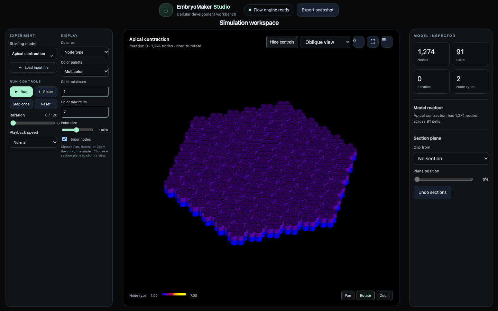

Run, pause, step, reset, or move to an iteration with the slider. Each step advances the displayed count by one.
Cell development simulation
A workbench for EmbryoMaker.
Load a starting state, advance the solver one iteration at a time, and inspect how cells and nodes change.
The simulator runs locally through the Flow server. This page is a project overview.

Explore the bundled examples, including nine saved states from the Morphospace exploration collection.
Change display fields, set color ranges, clip a section, and inspect node and cell properties.
Run it on your machine
Install the Flow compiler, clone the source, and start the local simulation server. The Studio opens at `127.0.0.1:8765`.
git clone https://github.com/godofecht/embryo-maker-flow.gitcd embryo-maker-flowtools/run-ui.shThen open http://127.0.0.1:8765 in a browser.